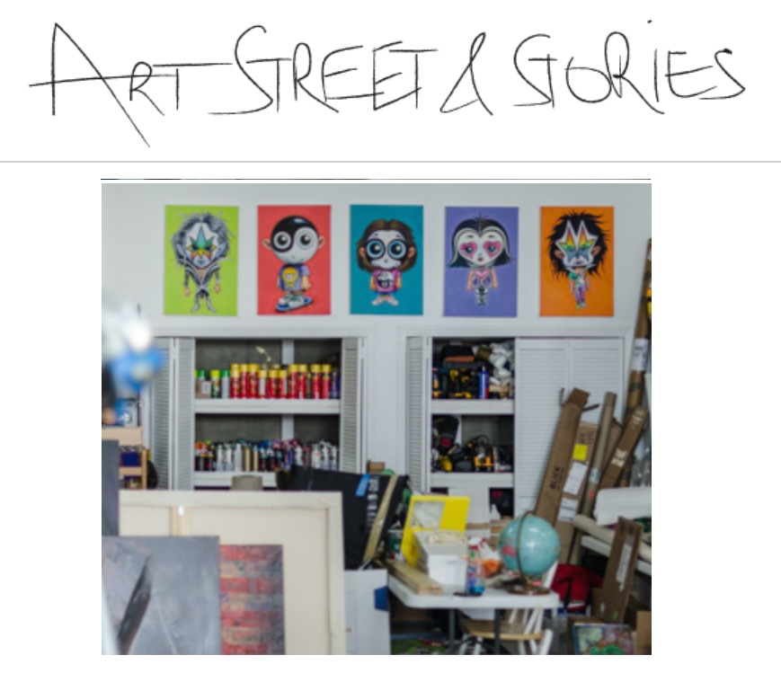

Exhibitions
Status Factory – The Art of Ron English, Frank M. Doyle Arts Pavilion (Orange Coast College), Costa Mesa, California, US, November 12–December 17, 2010.
Literature
Ron English, Ron English’s Stickable Art Offenses: A Sticker Book, designed by Randy Johnson (San Francisco: Last Gasp, 2011), 100 pp. ISBN 978-0867197594.

“DU POP ART À LA POPAGANDA”, GRAFFITI ART, no. 28, January - February - March, 2016, p. 59.

Arrested Motion studio coverage.. This work appears in studio photographs published in Arrested Motion, “Studio Visits: Ron English – Skin Deep @ Lazarides Rathbone Place,” June 14, 2011.

Notes
Also known as Kursed Kid.
Also known as Kursed Kid.
Ancillary Documentation



Provenance
Artist's personal collection.